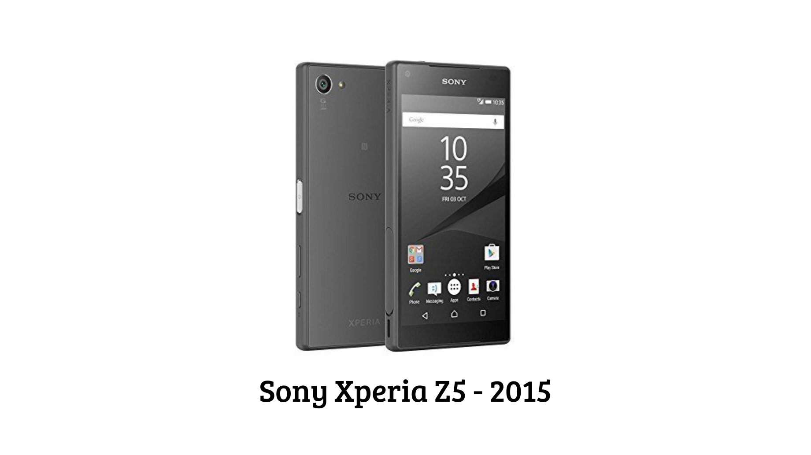

El siglo XXI ha sido testigo de una explosión de innovación tecnológica que ha transformado radicalmente nuestra forma de vida. Esta era se caracteriza por la convergencia de tecnologías, donde la informática, las telecomunicaciones y la electrónica se entrelazan para crear soluciones innovadoras.
Introducción
La tecnología ha experimentado un avance sin precedentes en el siglo XXI, caracterizándose por la racionalidad científica y tecnológica en la cual la ciencia y la tecnología han transformando diversos aspectos de la sociedad. Desde la manera en que nos comunicamos hasta cómo trabajamos y aprendemos, redefiniendo así nuestras interacciones y actividades diarias. Por ejemplo, la digitalización ha permitido que profesionales en áreas rurales gestionen y promocionen sus negocios a nivel mundial sin necesidad de trasladarse, reduciendo brechas sociales y territoriales.
No obstante, este rápido y continuo avance también presenta desafíos significativos. La sobreprotección parental, facilitada en parte por la tecnología, ha influido en la autonomía de los jóvenes, afectando su capacidad para enfrentar frustraciones y desafíos en la vida adulta. Además, la integración de tecnologías emergentes como la inteligencia artificial y la biotecnología plantea cuestiones éticas y sociales que requieren una reflexión profunda y una regulación adecuada.
En este contexto, es esencial analizar cómo la tecnología en el siglo XXI moldea nuestra sociedad, explorando tanto sus beneficios como también los retos que impone, para comprender plenamente su impacto y prepararnos para un futuro cada vez más interconectado y digitalizado.
Acontecimientos del siglo XXI
-Atentado a las torres gemelas, el 11 de septiembre de 2001
El 11 de septiembre de 2001, Estados Unidos vivió una de las situaciones de mayor gravedad desde la II Guerra Mundial. Aquel día, dos aviones comerciales, previamente secuestrados por terroristas, alteraron su rumbo para provocar su colisión, en sendos actos suicidas, contra las torres gemelas del World Trade Center de Nueva York. Poco tiempo después de producirse los impactos, ambos edificios se derrumbaron, lo que motivó un elevadísimo número de víctimas. Tras presenciar la tragedia, nadie se atrevía a dar ninguna cifra sobre el número de muertos, pero todos tenían en mente miles de personas. Los números hablaban por sí solos: 266 pasajeros a bordo de los cuatro aviones secuestrados murieron y en el Pentágono casi 200 personas perdieron la vida.
La cifra de muertos en el World Trade Center de Manhttan, las víctimas del derrumbamiento de las Torres Gemelas, no se conoce, pero muchos medios de comunicación hablan de más de 5.000
-Descifran el genoma humano (2001-2003)
El Proyecto Genoma Humano (PGH) fue un proyecto de investigación científica con el objetivo fundamental de determinar la secuencia de pares de bases químicas que componen el ADN e identificar y cartografiar los aproximadamente 20.000-25.000 genes del genoma humano desde un punto de vista físico y funcional.
-Atentados de los trenes de Madrid (2004)
España vivió el 11 de marzo de 2004, a solo tres días de unas elecciones generales, el peor atentado de su historia con 191 muertos y más de 1.800 heridos. Se convirtió en el segundo ataque terrorista más grave de la historia de Europa, solo superado por el atentado de Lockerbie (Escocia) en 1988 con 270 muertos.
-Muerte del Papa Juan Pablo II (2005)
2 de abril, en el año 2005 falleció Juan Pablo II a los 84 años en su habitación privada del Vaticano tras un progresivo deterioro de su salud. El Pontífice, quien nació en Polonia, falleció en su apartamento privado del Vaticano sin haber vuelto al Policlínico Gemelli, como era su voluntad. La ventana de su habitación, ubicado en el tercer piso del Palacio Apostólico, se encendió, dando así la señal para que los cardenales que se encontraban en la Plaza de San Pedro leyendo el rosario, dieran la noticia del fallecimiento a las más de 60.000 personas que se habían congregado allí para pasar con el Pontífice sus últimas horas.
-La invención de Facebook (2009)
El creador de Facebook es Mark Zuckerberg, estudiante de la Universidad Harvard. La compañía tiene sus oficinas centrales en Palo Alto, California. La idea de crear una comunidad basada en la Web en que la gente compartiera sus gustos y sentimientos no es nueva, pues David Bohnett, creador de Geocities, la había incubado a fines de los años 1980. Facebook compite por abrirse espacio entre empresas de éxito como Google y MySpace, por lo que se enfrenta a grandes desafíos para lograr crecer y desarrollarse. Una de las estrategias de Zuckerberg ha sido abrir la plataforma Facebook a otros desarrolladores.
-La llegada de la primera tableta (2010)
iPad es una línea de tabletas diseñadas y comercializadas por Apple Inc. La primera generación fue anunciada el día 27 de enero de 2010, mientras que el 2 de marzo de 2011 (última presentación de Steve Jobs) apareció la segunda generación. Se sitúa en una categoría entre un teléfono inteligente y una computadora portátil, enfocado más al acceso que a la creación de aplicaciones y temas.
-Transplante total de cara (2011)
En el año 2010, en la ciudad de Barcelona, España, se practicó por primera vez la intervención del trasplante de cara en donde participaron más de 30 médicos el cual duró un día y medio, se logra por el recibimiento de donantes de músculos faciales, huesos mandibulares, nariz, labios, dientes, mandíbula, siendo así un trasplante completo de cara. El paciente turco Ugur Acar, logró verse al espejo apenas 3 semanas después de la operación.
-La epidemia de ébola (2014-2015)
La epidemia de ébola en África Occidental fue la más grave desde que el virus fue identificado por primera vez en 1976. La epidemia comenzó en Guinea en diciembre de 2013 y se extendió rápidamente a Liberia y Sierra Leona. En total, se registraron más de 28,000 casos y más de 11,000 muertes. La epidemia puso de relieve la fragilidad de los sistemas de salud en la región y la necesidad de una respuesta internacional coordinada.
inventos
1-Teléfono inteligente
Los teléfonos inteligentes (o smartphones) han sido una de las tecnologías más transformadoras del siglo XXI, revolucionando la comunicación, el entretenimiento, el trabajo y la vida cotidiana.
Origen y evolución
Década de 2000:
Los primeros smartphones combinaban funciones de teléfono y PDA (asistentes digitales). Algunos de los ejemplos destacados son el BlackBerry (2003), el iPhone (2007) y el Android (2008).
Década de 2010:
En esta época hubo mejoras en el hardware y software de los teléfonos inteligentes, como, pantallas más grandes y con mejor resolución (AMOLED, 4K), cámaras avanzadas (múltiples lentes, IA para fotografía), procesadores potentes (ej. Snapdragon, Apple A-series), despliegue del 4G/LTE y luego 5G (desde 2019).
Tecnología Clave en Smartphones
Hardware Avanzado:
Procesadores: Chips como el Apple A16 Bionic o Snapdragon 8 Gen 2 permiten IA y gráficos avanzados. Pantallas: OLED/AMOLED (colores más vivos), tasas de refresco de 120 Hz.
Cámaras: Lentes múltiples (ultra gran angular, zoom óptico). IA para mejorar fotos (modo nocturno, HDR). Baterías: De 4000 mAh a 6000 mAh, carga rápida (hasta 200 W en algunos modelos).
Software y Sistemas Operativos
iOS (Apple): Ecosistema cerrado, mayor seguridad. Android (Google): Más personalizable, usado por múltiples marcas. Aplicaciones: Desde redes sociales (TikTok, Instagram) hasta banca móvil y salud (Apple Health).

2-Computación cuántica
Es la que ejecuta sus programas y comandos funcionando como partículas atómicas y subatómicas. Como el hardware y el software interactúan de la misma manera, en teoría, en la que los tejidos humanos se relacionan, sus capacidades de almacenamiento y desempeño prometen ser muy superiores a los de la computación clásica. Ahora bien, el reto consiste en hacer escalable esta tecnología.
Es la que ejecuta sus programas y comandos funcionando como partículas atómicas y subatómicas. Como el hardware y el software interactúan de la misma manera, en teoría, en la que los tejidos humanos se relacionan, sus capacidades de almacenamiento y desempeño prometen ser muy superiores a los de la computación clásica. Ahora bien, el reto consiste en hacer escalable esta tecnología. La computación cuántica utiliza el qubit como unidad básica, en vez del bit tradicional. ¿Qué implica esto? La multiplicidad de estados de una información facilita que un computador de 30 qubits realice 10,000 millones de operaciones en coma por segundo, más sencillo, la capacidad de 5,800 millones de consolas PlayStation. Tomando en cuenta que a las computadoras se les exigirá más con la implementación del 5G y el internet de las cosas, resulta interesante.
3-Inteligencia artificial
La Inteligencia Artificial incorpora inteligencia a los productos ya existentes. En la mayoría de las situaciones, la inteligencia artificial no se comercializará en forma de aplicación única. En cambio, los productos que ya emplea serán optimizados con herramientas de inteligencia artificial, de manera parecida a cómo se incorporó Siri como elemento a una nueva generación de productos de Apple.
La automatización, las plataformas de conversación, los robots y las máquinas inteligentes pueden fusionarse con grandes cantidades de datos para optimizar numerosas tecnologías en el hogar y en el entorno laboral, desde la inteligencia de seguridad hasta el estudio de las inversiones.
Se adapta a través de algoritmos de aprendizaje progresivo para permitir que los datos realicen la programación. La inteligencia artificial encuentra estructura y regularidades en los datos de modo que el algoritmo adquiere una habilidad: el algoritmo se convierte en un clasificador o predictor.
De este modo, así como el algoritmo puede aprender a jugar ajedrez, puede aprender también que producto recomendar a continuación en línea.
4-Redes 5G
A medida que aumentaba la demanda de mayor velocidad y capacidad en las redes móviles, se hizo evidente la necesidad de una nueva generación tecnológica. Por eso, en febrero de 2013, el Grupo de Trabajo 5D de la UIT-R inició estudios para definir la visión del 5G. Empresas líderes en telecomunicaciones invirtieron en investigación y desarrollo. En mayo de 2013, Samsung Electronics anunció haber desarrollado un sistema 5G capaz de alcanzar velocidades de transmisión de datos de hasta 1.056 Gbit/s en pruebas realizadas a una distancia de 2 kilómetros.
De esta manera, el 3 de abril de 2019, Corea del Sur se convirtió en el primer país en adoptar oficialmente la tecnología 5G, con operadoras como SK Telecom, KT y LG Uplus. Posteriormente, otros países comenzaron a implementar redes 5G. En junio de 2019, Filipinas lanzó una red de banda ancha 5G, mientras que, en diciembre de 2019, AT&T introdujo servicios 5G en Estados Unidos.
Esta tecnología no solo mejora la velocidad y capacidad de las comunicaciones móviles, sino que también habilita aplicaciones avanzadas como el Internet de las Cosas (IoT), vehículos autónomos, realidad aumentada y avances en sectores como la medicina y la industria. Su baja latencia y alta fiabilidad la convierten en un pilar fundamental para la transformación digital.
En resumen, la invención y desarrollo de las redes 5G son el resultado de una evolución continua en las telecomunicaciones, impulsadas por la necesidad de satisfacer las crecientes demandas de conectividad y las oportunidades que ofrecen para innovaciones futuras.
5-La Impresión 3D
La impresión 3D ha emergido en el siglo XXI como una tecnología transformadora, impactando profundamente sectores como la manufactura, la educación, la arquitectura y la medicina.
Manufactura: Innovación y Eficiencia
En la industria manufacturera, la impresión 3D ha permitido la producción rápida de prototipos y la fabricación de componentes complejos con mayor eficiencia y reducción de costos. Empresas como Czinger utilizan esta tecnología junto con inteligencia artificial para diseñar y producir hiperdeportivos de manera más sostenible y eficiente, minimizando el uso de materiales y optimizando el rendimiento de los vehículos.
Educación: Desarrollo de Habilidades Prácticas
En el ámbito educativo, la integración de la impresión 3D en los “makerspaces” permite a los estudiantes desarrollar habilidades prácticas y fomentar la creatividad. Por ejemplo, alumnos de primaria pueden crear modelos de animales para proyectos de ciencias, mientras que estudiantes de secundaria diseñan y fabrican piezas personalizadas para competencias de robótica.
Arquitectura: Construcción Innovadora y Sostenible
La arquitectura también se ha beneficiado de la impresión 3D, facilitando la creación de diseños complejos y personalizados. Esta tecnología permite a los arquitectos modificar componentes para satisfacer demandas específicas en cuanto a tamaño, apariencia y geometría, posibilitando la realización de estructuras con formas intrincadas que antes eran difíciles de lograr.
Medicina:Avances en Bioimpresión y Prótesis Personalizadas
En el campo médico, la impresión 3D ha facilitado la creación de prótesis personalizadas, modelos anatómicos para planificación quirúrgica y herramientas especializadas. La bioimpresión ha avanzado hacia la fabricación de tejidos y órganos funcionales, utilizando células del propio paciente para minimizar el riesgo de rechazo. Investigaciones recientes han demostrado la posibilidad de imprimir vasos sanguíneos y tejidos complejos, abriendo nuevas fronteras en la medicina regenerativa. Además, la impresión 3D está transformando la producción de medicamentos, permitiendo la creación de tabletas personalizadas adaptadas a las necesidades específicas de los pacientes. La FDA ha señalado que esta tecnología ofrece un paso prometedor hacia la fabricación de medicinas personalizadas.
6-Realidad Aumentada
La realidad aumentada (RA) ha emergido en el siglo XXI como una tecnología revolucionaria que superpone elementos virtuales al mundo real, enriqueciendo la percepción y la interacción de los usuarios con su entorno. Su aplicación se ha expandido a diversos sectores, transformando la manera en que vivimos, aprendemos y trabajamos.
Educación:
La RA ha redefinido las metodologías de enseñanza al permitir experiencias interactivas que facilitan la comprensión de conceptos complejos. Por ejemplo, aplicaciones como Google Sky Map permiten a los estudiantes explorar constelaciones y cuerpos celestes en tiempo real, haciendo el aprendizaje de la astronomía más accesible y atractivo.
Medicina:
En el ámbito médico, la RA se utiliza para mejorar la formación de profesionales y la planificación quirúrgica. Los médicos pueden visualizar imágenes médicas en 3D superpuestas sobre el paciente, facilitando diagnósticos más precisos y procedimientos más seguros.
Comercio y Marketing:
Empresas han adoptado la RA para ofrecer experiencias de compra inmersivas. Marcas como IKEA permiten a los clientes visualizar cómo quedarían los muebles en sus hogares antes de realizar una compra, mejorando la satisfacción y reduciendo devoluciones.
Impacto en la Sociedad
La integración de la RA en la vida cotidiana ha mejorado la eficiencia en diversas industrias y ha enriquecido la experiencia del usuario. Al combinar el mundo físico con información digital, la RA ofrece nuevas formas de interactuar con el entorno, facilitando tareas y proporcionando información contextual en tiempo real.
Desafíos y Futuro de la Realidad Aumentada
pesar de sus avances, la RA enfrenta desafíos como la necesidad de hardware especializado, preocupaciones sobre la privacidad y la seguridad de los datos, y la creación de contenido de calidad. Sin embargo, con el continuo desarrollo tecnológico y la creciente adopción en diferentes sectores, se espera que la RA juegue un papel aún más significativo en el futuro, transformando la manera en que interactuamos con el mundo que nos rodea.
7-Drones
Los drones, o vehículos aéreos no tripulados (UAVs), han evolucionado desde aplicaciones militares hasta convertirse en herramientas versátiles para uso civil, comercial y recreativo. Esta tecnología ha transformado industrias completas, desde la logística hasta el cine, y sigue expandiendo sus posibilidades.
Tecnología clave en drones modernos Sistemas de navegación:
Sensores anti-colisión: LiDAR, ultrasonido y visión por computadora (ej: DJI AirSense). RTK (Cinematografía en Tiempo Real): Precisión centimétrica para mapeo.
Energía y autonomía:
Baterías: LiPo (20–30 min de vuelo típico). Hidrógeno/Combustible: Prototipos como Hybrix (2h+ de autonomía). Carga inalámbrica: En desarrollo (drones que se cargan en plataformas). Radiofrecuencia (2.4GHz/5.8GHz): Control remoto. 4G/5G: Para operaciones BVLOS (Beyond Visual Line of Sight).
Los drones han pasado de ser juguetes high-tech a herramientas esenciales en sectores críticos. Su evolución dependerá de avances en autonomía, regulaciones y aceptación social. Pronto, veremos cielos llenos de drones realizando tareas cotidianas, desde repartir pizzas hasta salvar vidas.
8-Nanotecnología
La nanotecnología es la manipulación de la materia a una escala nanométrica (1-100 nanómetros), donde los materiales exhiben propiedades únicas. Esta disciplina ha transformado campos como la medicina, la electrónica y la energía.
Materiales Grafeno (2004):
Fue descubierto por Andre Geim y Konstantin Novoselov (Premio Nobel 2010). Es más fuerte que el acero, es conductor flexible y transparente. Se utiliza en electrónica flexible, baterías de alta capacidad.
Puntos cuánticos (Quantum Dots):
Nanopartículas semiconductoras que emiten luz de colores precisos. Se puede usar para pantallas QLED (Samsung, Sony), imágenes médicas.
Nanofármacos:
Entrega dirigida de medicamentos (ej: quimioterapia con liposomas). Ejemplo: Doxil (tratamiento contra el cáncer con nanopartículas).
Nanobots:
Prototipos para limpieza de arterias o detección de tumores (en fase experimental).
Aplicaciones Actuales
Electrónica: Transistores de nanotubos de carbono, chips más pequeños (ley de Moore). Textiles: Tejidos antibacterianos (nanopartículas de plata). Alimentos: Envases "inteligentes" que detectan contaminación. Cosméticos: Protectores solares con nanopartículas de óxido de zinc (transparentes). La nanotecnología está redefiniendo los límites de la ciencia y la ingeniería, con aplicaciones que van desde curar enfermedades hasta revolucionar la electrónica. Sin embargo, su desarrollo debe equilibrarse con Nanomedicina
9-Robots humanoides
Un robot humanoide es un robot con la forma de su cuerpo construido para parecerse al cuerpo humano. El diseño puede tener fines funcionales. Por ejemplo, interactuar con herramientas y entornos humanos, con fines experimentales, como el estudio de la locomoción bípeda, o para otros fines. En general, los robots humanoides tienen un torso, una cabeza, dos brazos y dos piernas. Sin embargo, algunas formas de robots humanoides pueden modelar solo una parte del cuerpo, por ejemplo, de cintura para arriba. Algunos robots humanoides también tienen cabezas diseñadas para replicar rasgos faciales humanos como ojos y bocas. Los androides son robots humanoides construidos para parecerse estéticamente a los humanos.
Los robots humanoides ahora se utilizan como herramientas de investigación en varias áreas científicas. Los ingenieros estudian la estructura y el comportamiento del cuerpo humano (biomecánica) para construir robots humanoides. Por otro lado, el intento de simular el cuerpo humano conduce a una mejor comprensión del mismo. La cognición humana es un campo de estudio que se centra en cómo los humanos aprenden de la información sensorial para adquirir habilidades perceptivas y motoras. Los ingenieros utilizan este conocimiento para desarrollar modelos computacionales del comportamiento humano y ha ido mejorando con el tiempo. Se ha sugerido que la robótica muy avanzada facilitará la mejora de los humanos comunes.
10-Vehículos Eléctricos (EVs)
Los vehículos eléctricos (EVs) están transformando la movilidad global, combinando innovación tecnológica, sostenibilidad y eficiencia energética. Desde automóviles hasta autobuses y camiones, la electrificación del transporte es clave para reducir emisiones y depender menos de los combustibles fósiles. Un vehículo eléctrico (EV) utiliza uno o más motores eléctricos para su propulsión, alimentados por baterías recargables en lugar de combustibles fósiles.
Tipos de Vehículos Eléctricos:
-BEV (Battery EV) 100% eléctrico, sin motor de combustión. Carga exclusiva en enchufes. Ej. Tesla Model 3, Nissan Leaf -PHEV (Plug-in Hybrid) Combina motor eléctrico y de gasolina. Puede cargarse enchufado. Ej. Toyota Prius Prime, BMW X5 PHEV
-HEV (Híbrido) Motor eléctrico + gasolina, pero no se enchufa (autorecarga al frenar). Ej. Toyota Corolla Hybrid
-FCEV (Pila de Hidrógeno) Usa hidrógeno para generar electricidad (solo emite agua). Ej. Toyota Mirai, Hyundai Nexo
Líderes del Mercado y Modelos Destacados Fabricantes Clave:
-Tesla: Dominio con Model 3/Y (50% del mercado estadounidense). -BYD (China): Mayor productor global en 2023, con baterías LFP. -Legacy automakers: Volkswagen (ID.4), Ford (Mustang Mach-E).
Modelos Revolucionarios:
-Tesla Cybertruck: Chasis exoesquelético, acero inoxidable. -Rivian R1T: Pickup eléctrica para aventuras off-road.
-Xpeng AeroHT: Primer "coche volador" eléctrico (2024).
Los vehículos eléctricos no son solo una moda, sino el futuro inevitable del transporte. Con avances en baterías, infraestructura y políticas gubernamentales (ej: prohibición de motores de combustión en la UE para 2035), su adopción masiva es cuestión de tiempo.
Juegos
A continuación agregaremos los links de algunos juegos representativos al siglo XXI; los cuales combinan el aprendizaje y entretenimiento, facilitando la comprensión de cómo la tecnología influye en diversos aspectos de la sociedad actual.
sopa de letras
Juego de la Oca: Modelo Educativo del Siglo XXI
por último un video para tener conciencia sobre el uso de la tecnología


 and Virtual Reality (VR) (2020s).jpg)